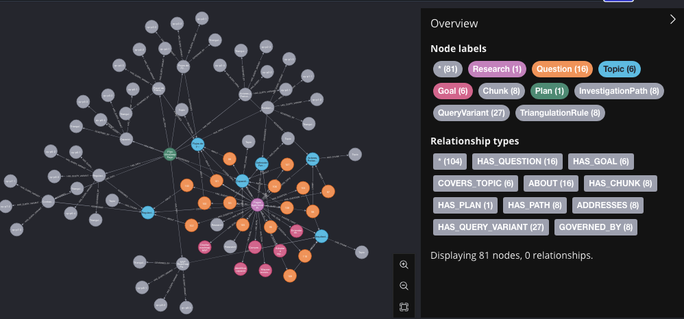
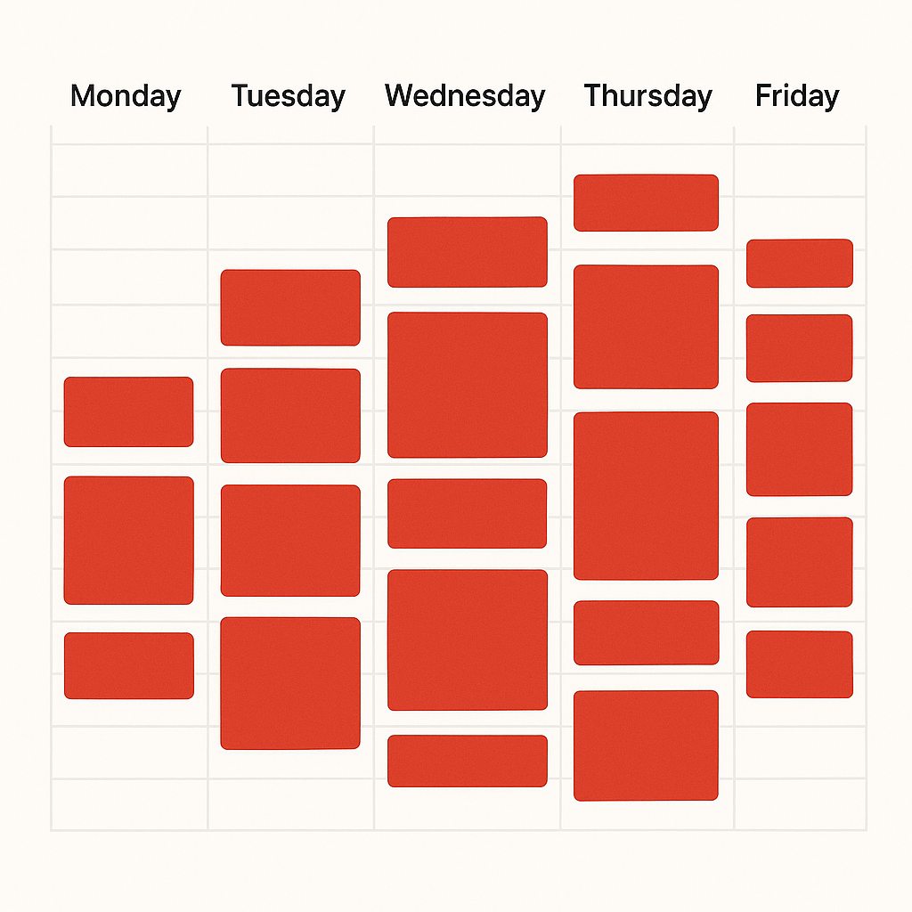

Knowledge Graph · AI
Apr 4, 2026
Using AI to Generate Knowledge!
My first ultra deep search with Knowledge Graph + Claude + Neo4j. 81 nodes. 3 relationship types. 0 manual hours.
– Engineering Manager
I help teams build better software through AI, architecture, and principled leadership.
Based in fintech, committed to responsible AI adoption and turning complexity into clarity.
To inspire others, break barriers and build bridges that bear witness to excellence — teaching about Christ, Technology, Leadership and Life, while growing through every process and experience.
"Be a better version of myself every day"
Principles, human impact, and the steps I follow in my journey toward responsible adoption of Generative AI.
20+ years turning ideas into software. I started as a developer, grew into architecture and leadership, and now focus on responsible AI adoption in fintech.
Insights on Architecture Design Systems and Software Development

Knowledge Graph · AIMy first ultra deep search with Knowledge Graph + Claude + Neo4j. 81 nodes. 3 relationship types. 0 manual hours.
Principles, human impact, and the steps I follow in my journey toward responsible adoption of Generative AI.

LeadershipPractical strategies to protect your time from unnecessary meetings and focus on meaningful work that truly drives results.
Exploring Mingrammer framework to create architecture diagrams using code, with Docker setup and integration with VS Code.
After the definition of the Architecture Design System and its Concepts, it is time to present how to build an ADS using BAU tools.
In the previous article I presented the concept of the architecture design system, highlighting two of their three principal elements.
Practical approach to implementing architecture design systems in modern software development environments.
Short thoughts, experiments, and discoveries — straight from the lab
Amazing, based on the deep-search skill, I created my own version running on Neo4j to store the plan and the result of the research.
The graph doesn't just store information — it connects it. Every relationship emerged from semantic analysis, not hardcoded rules. 81 nodes. 3 relationship types. 0 manual hours.
Words that inspire and guide my journey
"A man who has the knowledge but lacks the power to clearly express it is no better off than if he never had any ideas at all."Dick Gabriel Software Architecture
"Good software is about balance craftsmanship, maintainability and feature vision."Andres Rincon Development
"I only give likes to social media posts; PRs are thoroughly reviewed."Andres Rincon Development
"Code is like humor. When you have to explain it, it's bad."Cory House Development
"The future belongs to those who learn more skills and combine them in creative ways."Robert Greene Growth
"Everything changes and nothing stands still"Heraclitus Growth
"Say NO to what you don't want in your life or career — everything that drains your energy."Andres Rincon Leadership
Biblical wisdom that grounds my journey
"Trust in the Lord with all your heart and lean not on your own understanding; in all your ways submit to him, and he will make your paths straight."
"For I know the plans I have for you," declares the Lord, "plans to prosper you and not to harm you, to give you hope and a future."
"I can do all this through him who gives me strength."
"And we know that in all things God works for the good of those who love him, who have been called according to his purpose."
"Be still, and know that I am God; I will be exalted among the nations, I will be exalted in the earth."
"Whatever you do, work at it with all your heart, as working for the Lord, not for human masters."
"Have I not commanded you? Be strong and courageous. Do not be afraid; do not be discouraged, for the Lord your God will be with you wherever you go."
Whether it's AI, architecture, or leadership — I'm always open to a good conversation.